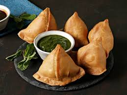

samosa
Description:
Samosa is a popular Indian snack consisting of a crispy pastry filled with a spiced mixture of potatoes, peas, and sometimes meat. They are deep-fried to golden perfection and are often served with chutney or yogurt.

Ingredients:
- 2 cups all-purpose flour
- 4 medium potatoes, boiled and mashed
- 1/2 cup green peas
- 1 teaspoon cumin seeds
- 1 teaspoon garam masala
- 1 teaspoon turmeric powder
- 1 teaspoon red chili powder
- Salt to taste
- Oil for frying
steps
- In a bowl, mix the flour with a pinch of salt and water to form a stiff dough. Set aside.
- In a pan, heat some oil and add cumin seeds. Once they splutter, add the green peas and cook for a few minutes.
- Add the mashed potatoes, garam masala, turmeric powder, red chili powder, and salt. Mix well and cook for another 5 minutes. Let the filling cool.
- Divide the dough into small balls. Roll each ball into a thin oval shape. Cut it in half to form two semi-circles.
- Take one semi-circle, fold it into a cone shape, and seal the edge with water.
- Fill the cone with the potato filling and seal the open edge with water.
- Heat oil in a deep frying pan. Once hot, fry the samosas until golden brown and crispy.
- Remove from oil and drain on paper towels. Serve hot with chutney.
Back to Home